Paper-PEOPLESANSPEOPLE-A Synthetic Data Generator for Human-Centric Computer Vision
论文阅读。
文字数：---
资源
-
PapersWithCode: PeopleSansPeople Dataset | Papers With Code
全文
Abstract
- 人脸检测和人体姿态估计的数据集多样性不够，还会受隐私、法律、安全和道德问题的影响。
- 发布了一个以人为中心的合成数据生成器 PEOPLESANSPEOPLE。包含可模拟的 3D 人力资源、参数化照明和相机系统，并生成 2D 和 3D 边界框、实例和语义分割以及 COCO 姿势标签。
- 使用 Detectron2 Keypoint R-CNN 变体进行了基准合成数据训练，以合成数据对网络进行预训练，使用真实数据进行微调，效果喜人。
- 同样这个通过合成数据预训练的模型优于使用 ImageNet 预训练的模型。
1 Introduction
- 数据集需求量大。
- 对于以人为中心的视觉任务来说，标记的数据越来越复杂。
- 真实数据集涉及隐私和道德问题。
- 一些动作的数据集难以采集。
- 人工标注数据集容易出错。
本文设计的合成数据生成器：PEOPLESANSPEOPLE，基于 Unity 和 Perception 软件包。包括：
- macOS 和 Linux 二进制文件，能够使用 JSON 注释生成 1M 以上的大规模数据集
- 28 个不同年龄和种族的 3D 人体模型，具有不同的服装、头发和皮肤颜色
- 39 个动画剪辑，具有完全随机的人形位置、大小和旋转，以生成不同的人物安排；
- 完全参数化的照明（位置、颜色、角度和强度）和相机设置；
- 一组用作干扰物和遮挡物的对象基元；
- 一组自然图像，用作对象的背景和纹理。
除了上面提到的二进制文件外，我们还发布了一个 Unity 模板项目，通过帮助他们开始创建自己版本的以人为中心的数据生成器，帮助降低社区的进入门槛。此环境具有为二进制文件描述的全部功能，除了：
- 4 个不同服装颜色的3D人体模型示例；
- 8 个示例动画剪辑，具有完全随机的人形放置、大小和旋转，以生成不同的人物安排；
- Unity Perception 软件包中的一组杂货的自然图像，用作对象的背景和纹理。
2 Related Work
-
介绍一下合成数据生成器。
-
领域随机化是一种通过随机化模拟器的参数来将多样性引入生成数据的技术。领域随机化已应用于包括物体检测、机器人操纵和自动驾驶汽车导航在内的任务。PEOPLESANSPEOPLE 使研究人员能够在涉及作为目标类别一部分的人的任务中使用具有领域随机化的合成数据，从而在现有和新领域扩展模拟器功能的空间，如自动驾驶汽车和人体姿态估计和跟踪。
3 PEOPLESANSPEOPLE
-
PEOPLESANSPEOPLE 是一个参数化数据生成器，具有由各种姿势的 3D 人力资源和具有自然纹理的干扰对象填充的 3D 场景。我们将数据生成器打包为一个二进制文件，通过一个简单的 JSON 配置文件公开几个参数以供更改。
-
PEOPLESANSPEOPLE 通过 JSON 中的 2D 和 3D 边界框、语义和实例分割掩码以及 COCO 关键点标签为人力资源生成 RGB 图像和相应标签。此外，它还会发出用于统计比较和分析的场景元数据。
3.1 3D Assets
-
PEOPLESANSPEOPLE拥有一套来自 RenderPeople 的 28 个扫描三维人体模型。这些模型在种族和年龄上都是多样化的，完全重新地形化、装配和蒙皮，具有高质量的纹理。
-
我们不得不更改资产，以便在运行时操作服装的材料元素。具体来说，我们重新绘制了一些组成遮罩纹理的红色、绿色、蓝色和 alpha 通道。此外，我们在 Unity 中创建了一个 Shader Graph，它允许我们交换人力资源的材料元素，并更改衣服的色调和纹理。这些更改使我们能够将人体模型导入 Unity，将其放置在场景中，设置其动画，并更改其服装纹理和颜色。
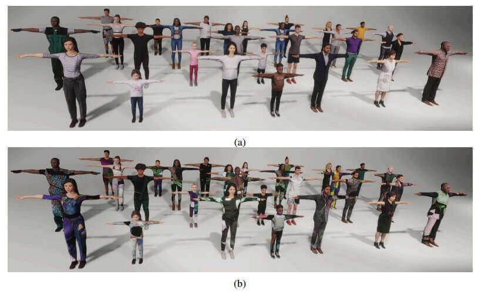
a) 28 个扫描的 3D 人体模型，用于具有默认姿势和服装纹理的环境中。
b) 由 PEOPLESANSPEOPLE 着色器图形启用的服装纹理变化的一个示例。
- 为了为我们的人力资源生成不同的姿势，我们从 Mixamo 收集了一组 39 个动画，从空转、行走和跑步等简单动作到铺板、表演霹雳舞和打斗等更复杂的动作。我们以 24 帧/秒的速度下载了这些动画片段作为Unity 的 FBX，并且没有关键帧缩减。最后，我们确保将所有动画剪辑重新定位到我们的 RenderPeople 人力资源。
3.2 Unity Environment
- 我们使用 Unity 版本 2020.3.20f1 和 Unity 的 Perception 包0.9.0-preview.2 来开发 PEOPLESANSPELE。我们的 3D 场景包括背景墙、Perception 相机、一个定向光（太阳）、一个移动点光源和六个固定场景点光源。
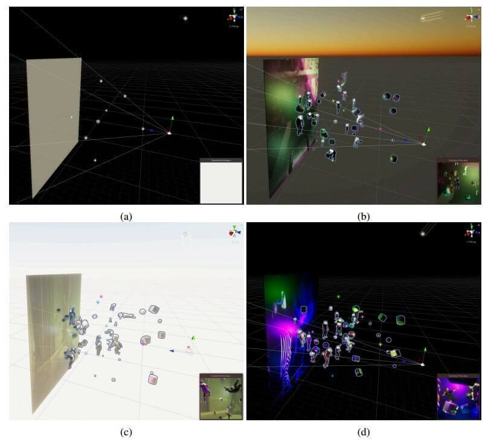
(a) 场景设置。该场景有一个背景墙、一个 Perception 相机、一个定向光（太阳）、一个移动点光源和六个固定点光源。
(b), (c）和 (d) 示例模拟。每个图右下角的小相机预览窗格显示感知相机的渲染预览。我们更改墙背景纹理、点光源颜色、强度和位置，以及每帧中的阳光方向。我们还可以更改相机的视野、焦距、位置和方向。我们在墙前的场景中以不同的比例、姿势、服装纹理和围绕 Y 轴的旋转来生成人力资源。此外，我们在场景中生成具有不同方向、比例和纹理的原始遮挡对象。
-
场景背景和照明 我们从一组 1600 幅自然图像中随机选择了一个背景墙纹理，这些图像取自 COCO 未标记的 2017 数据集。我们确保在这些自然图像中不会出现人类的照片（甚至是挂在墙上的人类相框）。我们还更改纹理的色调偏移。我们更改场景中六个点光源和一个平行光的颜色、强度和打开/关闭状态。此外，我们有一个移动的点光源，它可以改变位置和旋转。场景中的这组八个灯光产生不同的照明、阴影和场景外观。
-
Perception相机 Perception 相机扩展渲染过程以生成注释标签。在 PEOPLESANSPEOPLE 中，对于我们的基准实验，我们有一个对象类（人），我们为其生成 2D 边界框和人类关键点标签。使用 Unity Perception 软件包，我们可以包括语义和实例分割掩码以及 3D 边界框。
-
我们的 2D 边界框和人体关键点遵循 COCO 数据集标准。关键点标签的可见性状态为： 未标记， 标记但不可见， 标记且可见，类似于 COCO。然而，我们不使用 标签，因为即使在最拥挤的场景中，我们也可以生成亚像素完美标签。
Perception 摄像头总共为用户提供了三种标签方案选择：
-
可见对象
-
可见和遮挡对象：在这种情况下，如果一个人被自己或另一个对象遮挡，则将其注释为可见（）。
-
所有对象：在这种情况下，即使完全落在另一个对象后面的对象也会被注释。这对于人类跟踪和活动识别特别有用。
- 场景中的对象 我们使用一组原始的 3D 游戏对象，例如立方体、圆柱体和球体，作为背景或遮挡/干扰对象。我们可以在场景中的任意位置、比例、方向、纹理和色调偏移处生成这些对象。我们使用与这些对象的背景墙相同的 COCO 未标记 2017 纹理。
3.3 Domain Randomization
-
为了使用可以推广到真实领域的合成数据来训练模型，我们依赖于领域随机化，其中模拟环境的各个方面被随机化，以将变化引入合成数据中。Unity Perception 软件包提供了一个领域随机化框架。在每一帧，随机化器作用于预定义的 Unity 场景组件。我们首先提供要随机化的组件的参数定义。然后我们定义我们希望这些参数如何分布。我们提供了正态分布、均匀分布和二项式分布，尽管也可以定义自定义分布。为了简单起见，PEOPLESANSPEOPLE 中的所有随机化器值都使用均匀分布。
-
简言之，我们对 3D 对象的放置和姿势、场景中 3D 对象的纹理和颜色、照明的配置和颜色、相机参数以及一些后处理效果进行了随机化。某些类型的域随机化，如照明、色调偏移、相机旋转/视场/焦距，模拟标准数据增强的行为。因此，我们在合成数据训练期间不使用数据增强。
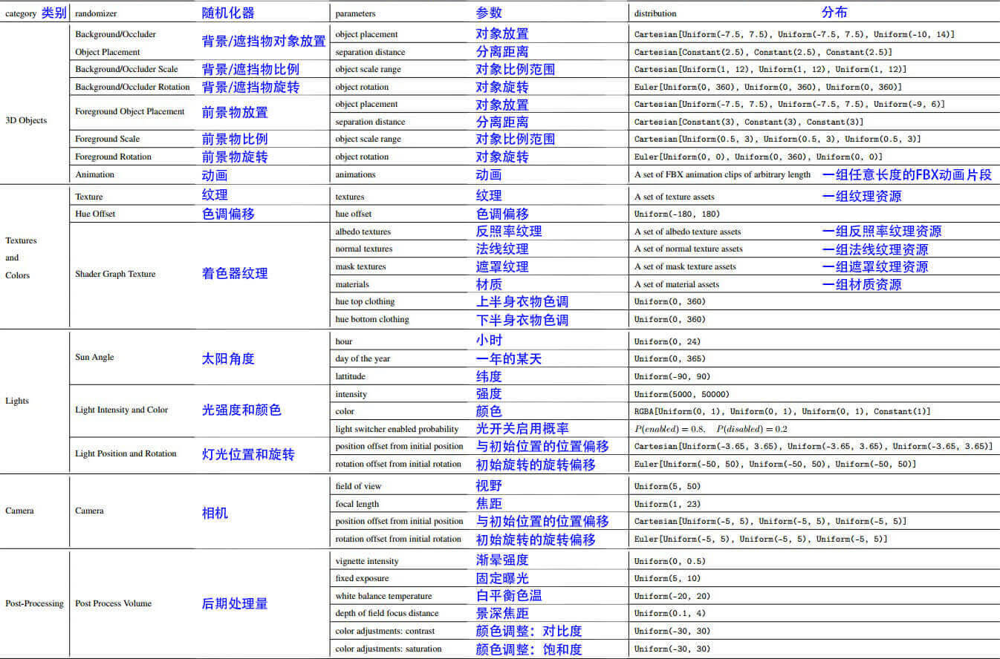
3.4 Data Generation
在配备：
-
2.3 GHz 8 核 Intel Core i9
-
AMD Radeon Pro 5500 M 4 GB
-
Intel UHD Graphics 630 1536 MB
-
32 GB 2667 MHz DDR4内存
的 MacBook Pro（16英寸，2019）上
- PEOPLESANSPEOPLE 在大约 3 分钟内生成 图像、边界框和关键点标签。
4 Experiments
- 使用 Detectron2 Keypoint R-CNN 变体进行了基准合成数据训练，以合成数据对网络进行预训练，使用真实数据进行微调，并与 COCO 数据集作对比。
4.1 Dataset Statistics
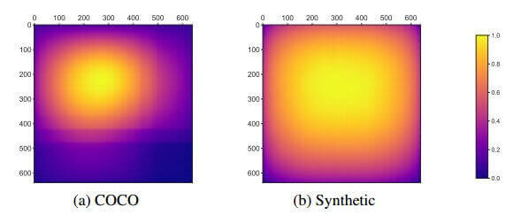
- 认为多样性也比那个基于给他爱的数据集要好。
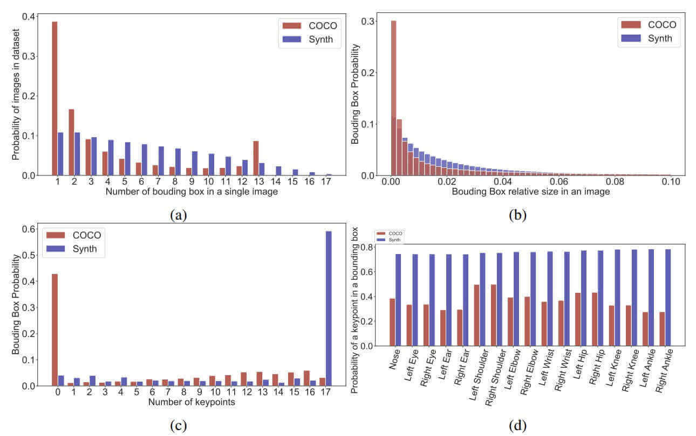
4.2 Training
将所有模型的：
- 初始 learning rate 设置为 0.02
- inital patience 设置为 38
- 初始 epsilon 设置为 5
- weight decay 设为 0.0001
- momentum 设为 0.9
- 在训练开始时执行 1000 次迭代的线性热身期（包括从头开始训练和迁移学习），在那里我们慢慢地将学习率提高到初始学习率
- 我们使用 8 个 NVIDIA 特斯拉 V100 GPU，使用 synchronized SGD
- 每个 GPU 的 mini-batch size 为 2。
- 使用 ImageNet 的平均像素值和标准偏差来对模型中的图像进行归一化
real-world dataset
- 我们将 COCO 训练集划分为重叠的子集
- 这些子集包含 641、6411、32057 和 64115 个图像，分别包含COCO训练集中的1%、10%、50% 和 100%，以研究 few-shot transfer。
- 较小的集合是较大集合的子集。
- 我们在 train 期间使用 person COCO验证集进行 validation。
- 我们报告了我们使用 COCO test-dev2017 数据集进行的所有COCO训练数据实验的最终模型性能。
- 我们为我们的合成数据集从 个随机种子中生成了 个 500×10^3 图像的数据集。我们将它们分为 训练集和 10×10^3 验证集。我们使用合成验证集在纯合成数据上从头开始训练期间评估模型。
- 训练后，我们使用 person COCO 验证和 test-dev2017 集合报告这些模型的性能。
benchmark experiments
- 我们首先从头开始训练我们的模型，并在 COCO 验证集和 COCO test-dev2017 集上评估它们的性能。
- 其次，我们使用在合成数据上训练的模型的权重，并在有限的 COCO（真实）数据子集上对其进行微调，以进行 few-shot transfer。
- 为了进行完整的比较，我们还使用 ImageNet 预训练的权重并对 COCO 数据子集进行微调。
- 在 few-shot transfer 学习训练中，我们对所有网络层进行了重新训练。对于从头开始训练的模型和少镜头迁移学习，超参数和学习率时间表是相同的。
5 Results
- 仅使用合成数据效果还是差些，但是合成数据和真实数据混合就很好使了。
5.1 Dicussion
- 我们令人鼓舞的结果开启了对超参数搜索、优化策略、训练计划和替代训练策略的进一步研究，以弥合模拟与现实的差距。
6 Conclusion and Limitations
- 由于 RenderPeople 的再分配和许可政策，我们不提供对 3D 人力资产的直接访问；相反，我们提供了详细的说明和示例，用于采购和准备人力资产模拟。尽管预先制作的 PEOPLESANSPEOPLE 二进制文件无法实现复杂的资产结构化放置，但研究人员可以更新提供的随机化器，以允许不同的策略。
代码
该存储库提供了 PeopleSansPeople Unity 环境模板在 HDRP 中的版本。该项目包括自定义的随机化功能和一些由 Unity Technologies 提供的示例人类资源。
该环境仍然提供了我们在论文中介绍的 PeopleSansPeople 的全部功能，以及我们提供的 Linux 和 macOS 二进制文件。鉴于我们没有重新分发许可证的第三方资产，我们提供以下示例资产/内容：
- 4 个带有不同服装颜色但外观相同的 Unity 品牌资产。
- 529 个 Unity 食品杂货纹理。
- 8 个由 Unity 拥有的动画剪辑。
该 Unity 环境的目的是使社区能够开始构建自己版本的以人为中心的数据生成器，降低进入门槛，并为他们提供与 **PeopleSansPeople **中存在的所有功能相同的功能。用户可以轻松地将该项目中的资产和内容与自己的资产进行替换，只要其属性与我们提供的示例资产相匹配即可。
装一个 Unity 3.20f1，然后直接跑 PeopleSansPeople/peoplesanspeople_unity_env at main · Unity-Technologies/PeopleSansPeople (github.com)，但不知道是哪里有问题，加载得贼慢，还容易卡死。emmmm
第二天进来感觉正常了。
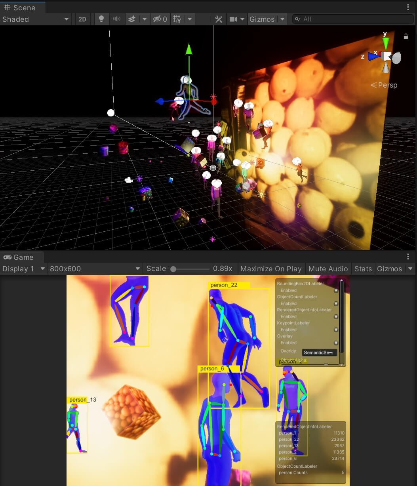
HumanScene.unity 中有如下对象：
- Main Camera
- Wall
- Simulation Scenario
- Post Process Volume
- Sky and Fog Volume
- Lights
- DirectionalLightSun
- PointLight1
- PointLight2
- PointLight3
- PointLight4
- PointLight5
- PointLight6
- PointLightSceneMoving
Main Camera
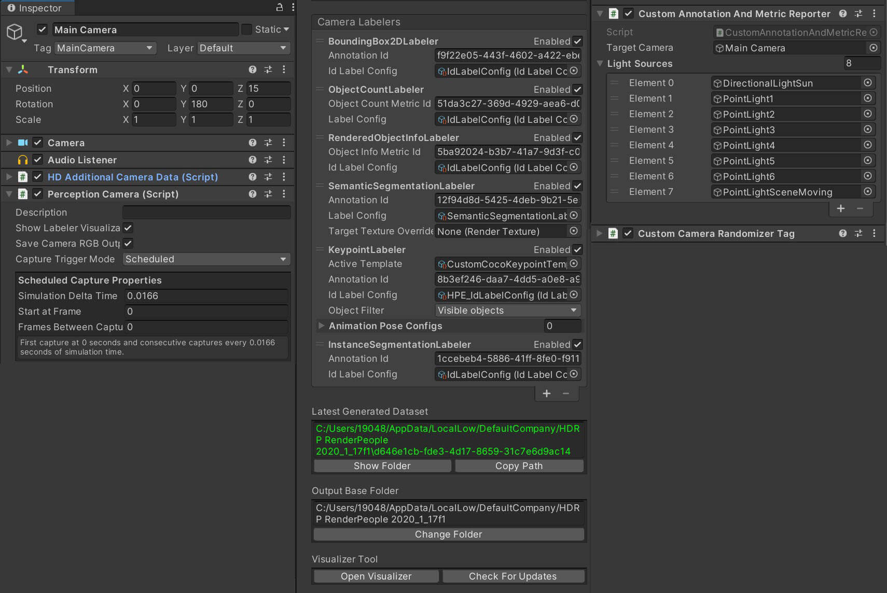
Perception Camera
-
First capture at 0seconds and consecutive captures every 0.0166seconds of simulation time.
在 0 秒处首次捕获，每 0.0166 秒模拟时间连续捕获一次。
-
Camera Labelers
标注的数据有
-
BoundingBox2DLabeler
2D 包围框
-
ObjectCountLabeler
对象计数
-
RenderedObjectinfoLabeler
渲染对象信息（这是干啥的？）
-
SemanticSegmentationLabeler
语义分割
-
KeypointLabeler
关键点
-
Animation Pose Configs
动作动画
-
InstanceSegmentationLabeler
实例分割
-
CustomAnnotationAndMetricReporter
这段代码是一个自定义的注解和指标报告器脚本，用于在 Unity 中使用 Perception 包合成数据集。下面是代码的主要含义：
- 通过添加
[RequireComponent(typeof(PerceptionCamera))]属性，确保脚本附加到了带有 PerceptionCamera 组件的游戏对象上。（说明所有跟输出数据标注有关的都与 PerceptionCamera 有关） - 定义了一些变量来存储指标的定义，例如光源位置、旋转、强度和颜色，以及摄像机位置、旋转、视野和焦距的指标定义。
- 在
Start()方法中，使用DatasetCapture.RegisterMetricDefinition()注册了所有的指标定义，并为每个指标定义分配了一个唯一的 ID。 - 在
Update()方法中，通过遍历lightSources数组，报告了每个光源的位置、旋转、强度和颜色。这里使用了DatasetCapture.ReportMetric()方法来报告指标的值。 - 还报告了摄像机的位置、旋转、视野和焦距。
- 注释掉的代码是一个示例，展示了如何在相机的局部空间计算目标物体的位置，并使用
GetComponent<PerceptionCamera>().SensorHandle和ReportAnnotationValues()方法报告注释值。
总之，这段代码的目的是在 Unity 中使用 Perception 包捕捉并报告指标和注释，其中包括光源和摄像机的位置、旋转、强度、颜色等信息，以及目标物体的边界框注释（注释部分被注释掉了）。
CustomCameraRandomizerTag
相机随机化的标签。
Wall
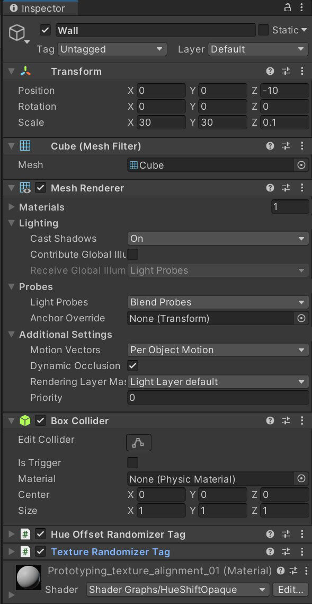
HueOffsetRandomizerTag
色调偏移随机化的标签。
TextureRandomizerTag
纹理随机化的标签。
Background Object
包含以下 Tag：
-
CustomBackgroundOccluderScaleRandomizerTag
比例随机化的标签
-
HueOffsetRandomizerTag
色调偏移随机化的标签
-
TextureRandomizerTag
纹理随机化的标签
-
RotationRandomizerTag
旋转随机化的标签
Foreground Object
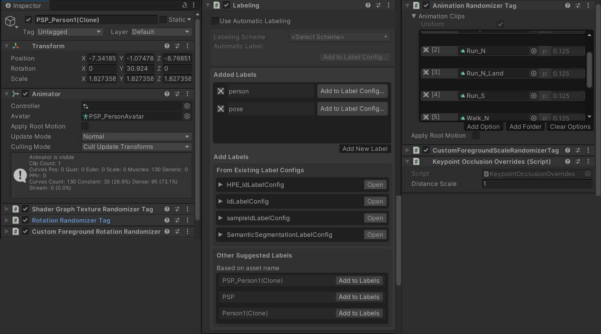
拥有：
-
Shader Graph Texture Randomizer Tag
着色器纹理随机化的标签
-
Rotation Randomizer Tag
旋转随机化的标签
-
Custom Foreground Rotation Randomizer
前景物体旋转随机化的标签（我觉得把上面那个标签给覆盖了）
-
Labeling
- 挂着人物和动作的标签
-
Animation Randomizer Tag
动画随机化的标签
-
CustomForegroundScaleRandomizerTag
前景物体缩放随机化的标签
-
Keypoint Occlusion Overrides
关键点遮挡覆盖
- Overrides the default occlusion distance values by a scalar. This is necessary for bodies with different body types (i.e. children should be less than one)
- 用标量覆盖默认遮挡距离值。这对于不同体型的身体是必要的（即儿童应该小于一个）
Simulation Scenario
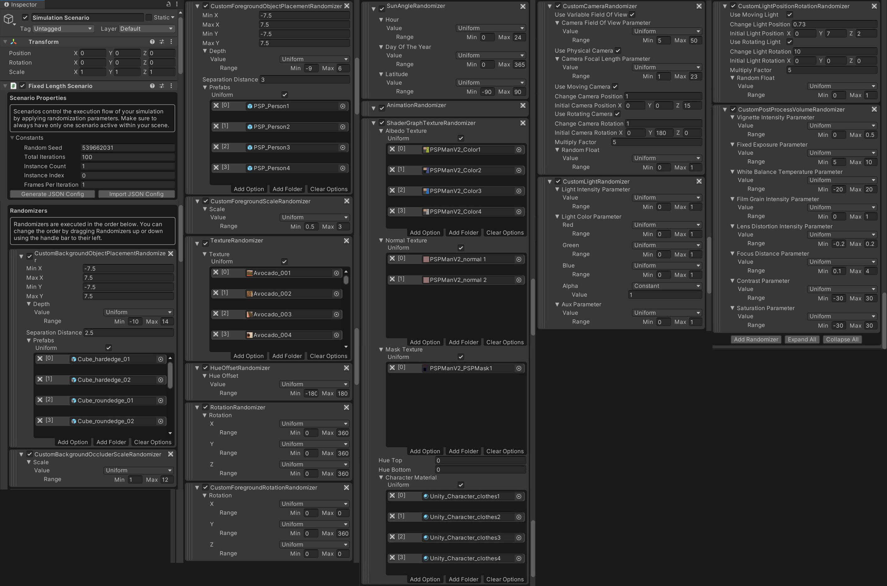
Fixed Length Scenario
Scenario Properties
Scenario 通过应用随机化参数来控制模拟的执行流。确保场景中始终只有一个方案处于活动状态。
Randomizers
Randomizers 按以下顺序执行。您可以通过使用手柄向上或向下拖动随机发生器来更改顺序。
-
CustomBackgroundObjectPlacementRandomizer
- 控制 background object 放置，X 轴和 Y 轴范围在 之间，Depth Vaule 即为 Z 轴，范围为 。
- 各个 background object 间隔不小于 。
-
CustomBackgroundOccluderScaleRandomizer
- 控制 background object 比例，范围在 之间。
-
CustomForegroundObjectPlacementRandomizer
- 控制 foreground object 放置，X 轴和 Y 轴范围在 之间，Depth Vaule 即为 Z 轴，范围为 。
- 各个 foreground object 间隔不小于 3。
-
CustomForegroundScaleRandomizer
- 控制 foreground object 比例，范围在 之间。
-
TextureRandomizer
- 从列表中随机选一个纹理。
-
HueOffsetRandomizer
- 色调偏移范围：
-
RotationRandomizer
- XYZ 轴 随机乱转。
-
CustomForegroundRotationRandomizer
- 限制了只有 Y 轴可以 随机乱转，大概是为了确保生成的图片中人的脚垂直向下。
-
SundayAngleRandomizer
- 随机化太阳光的
- 小时
- 日期
- 纬度
- 随机化太阳光的
-
AnimationRandomizer
- 随机化动作，这里的相关逻辑写到了
AnimationRandomizerTag.cs里？
- 随机化动作，这里的相关逻辑写到了
-
ShaderGraphTextureRandomizer
-
以下纹理 / 材质中从列表中随机选一项
-
Albedo Texture
反照率纹理
-
Normal Texture
法线纹理
-
Mask Texture
遮罩纹理
-
Character Material
人物材质
-
-
-
CustomCameraRandomizer
-
Camera Field Of View Parameter
视野随机化范围
-
Camera Focal Length Parameter
焦距随机化范围
-
Muliply Factor:
-
Change Camera Position:
与初始位置的位置偏移，XYZ 轴范围
-
Change Camera Rotation:
初始旋转的旋转偏移，XYZ 轴范围
-
-
-
CustomLightRandomizer
- Light Intensity Parameter
- 范围 ，但是在
CustomLightRandomizerTag里还要乘个系数，所以最终亮度范围是
- 范围 ，但是在
- Light Color Parameter
- RGB 范围 ，不透明度 A 恒为 1
- Aux Parameter
- 辅助参数，不知道干啥的，范围
- Light Intensity Parameter
-
CustomLightPositionRotationRandomizer
- Multiply Factor:
- Random Float:
- Change Light Position:
- 灯光与初始位置的位置偏移：（）
- Change Light Rotation:
- 初始旋转的旋转偏移：（）
-
CustomPostProcessVolumeRandomizer
后期处理随机化器
-
Vignette Intensity Parameter
渐晕强度：
-
Fixed Exposure Parameter
固定曝光：
-
White Balance Temperature Parameter
白平衡色温：
-
Film Grain Intensity Parameter
薄膜颗粒强度参数：
-
Lens Distortion Intensity Parameter
镜头畸变强度参数：
-
Focus Distance Parameter
景深焦距：
-
Contrast Parameter
对比度：
-
Saturation Parameter
饱和度：
-
Post Process Volume
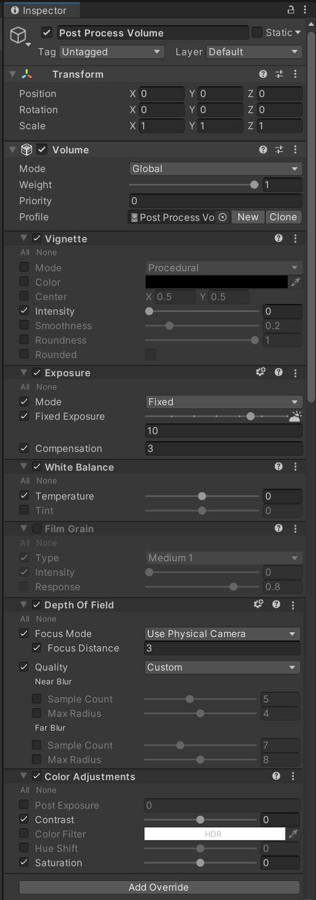
Sky and Fog Volume
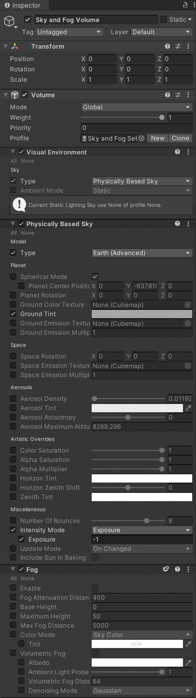
Lights
DirectionalLightSun
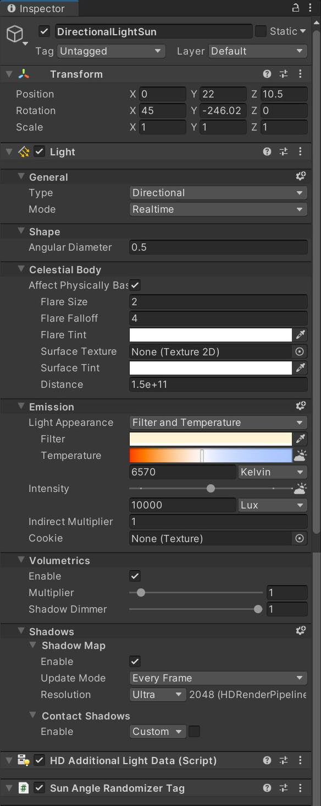
PointLight (1-6)
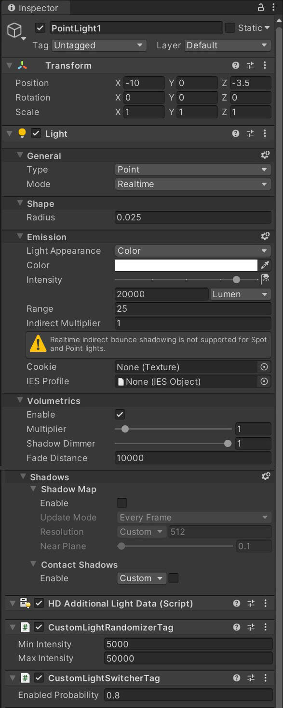
PointLightSceneMoving
在 PointLight 的基础上多了一个 CustomLightPositionRotationRandomizerTag 组件。
数据统计
1 | |